Claude Voice
Talk to Claude Code out loud and hear it answer, while you keep working.
Watch first: install, first run and a quick example in under 2 minutes, with sound.
Before you start
1Put the folder on another drive
Unzip ClaudeVoice.zip, or download the repo, to a folder on D: or any other drive.
Everything installs inside this folder, so don't use C:.
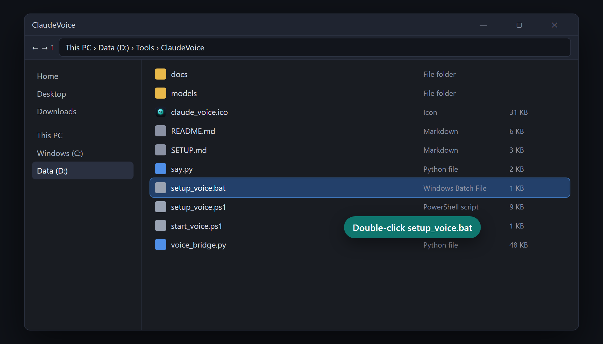
D:\Tools\ClaudeVoice. Then double-click setup_voice.bat.2Run the setup
A black window opens and works through 8 steps, showing [1/8] … [8/8] with a
progress bar and the time so far. When it asks a question, press Enter. That's the right answer for most people.
| It asks | What to do |
|---|---|
| Folder for MODELS | Enter, or type a folder on another drive, like E:\VoiceModels. Never C:. |
| Folder for CACHE | Enter, or type a folder on another drive. Never C:. |
| Install Python 3.11? (only if missing) | Y |
| Download the realistic voice? | Enter (yes, about 340 MB). Type n for the lighter built-in Microsoft voice. |
| Download the speech model now? | Enter (yes, about 480 MB) |
| Create a desktop shortcut? | Enter (yes) |
Where to keep things: press Enter, or pick another drive
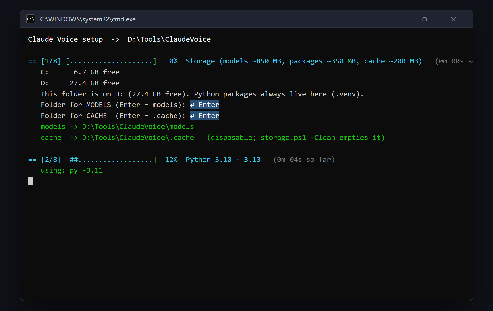
Installing: watch the bars
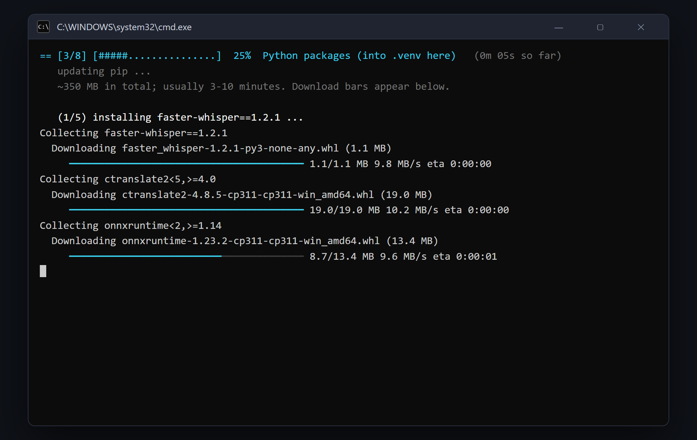
(1/5) to (5/5), each with a download bar.
This is the slow part: about 350 MB and 3 to 10 minutes.Enter, Enter, done
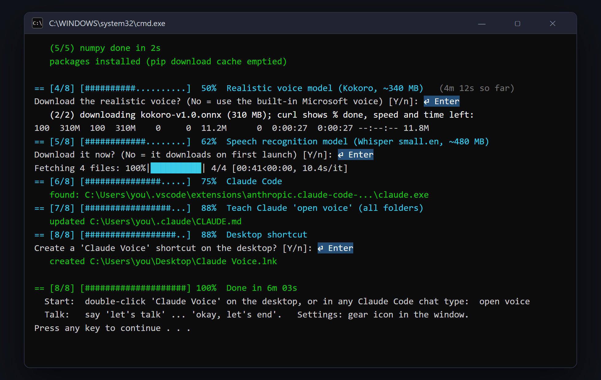
setup_voice.bat again. It continues where it stopped.3Start talking
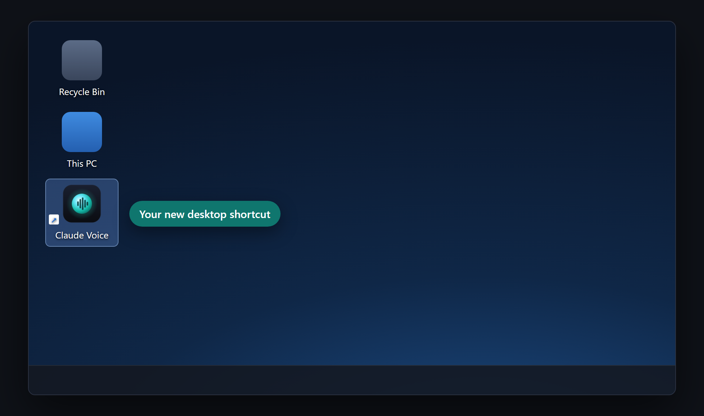
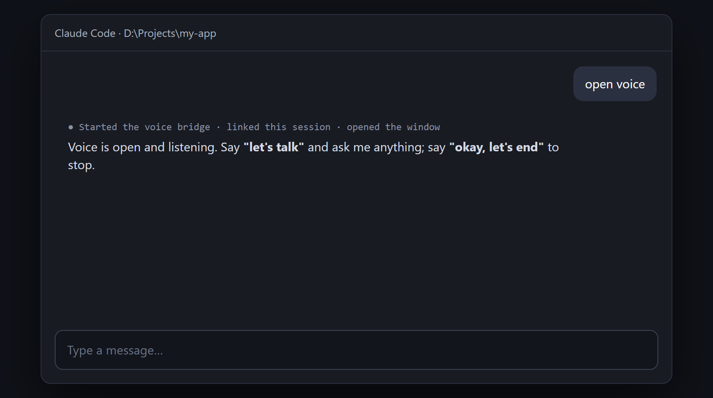
- Type open voice in Claude Code. The Claude Voice window opens.
- Say “let's talk”, then ask for anything in plain words.
- Say “okay, let's end” when you want it to stop listening.
Using it
The orb's colour shows what it's doing. The feed underneath shows everything said.
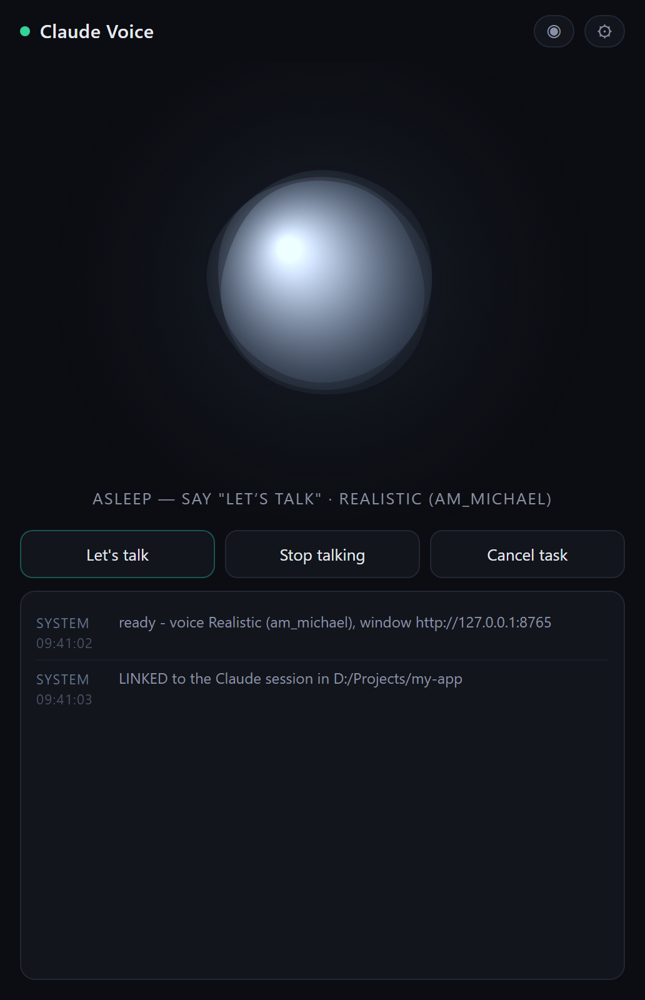
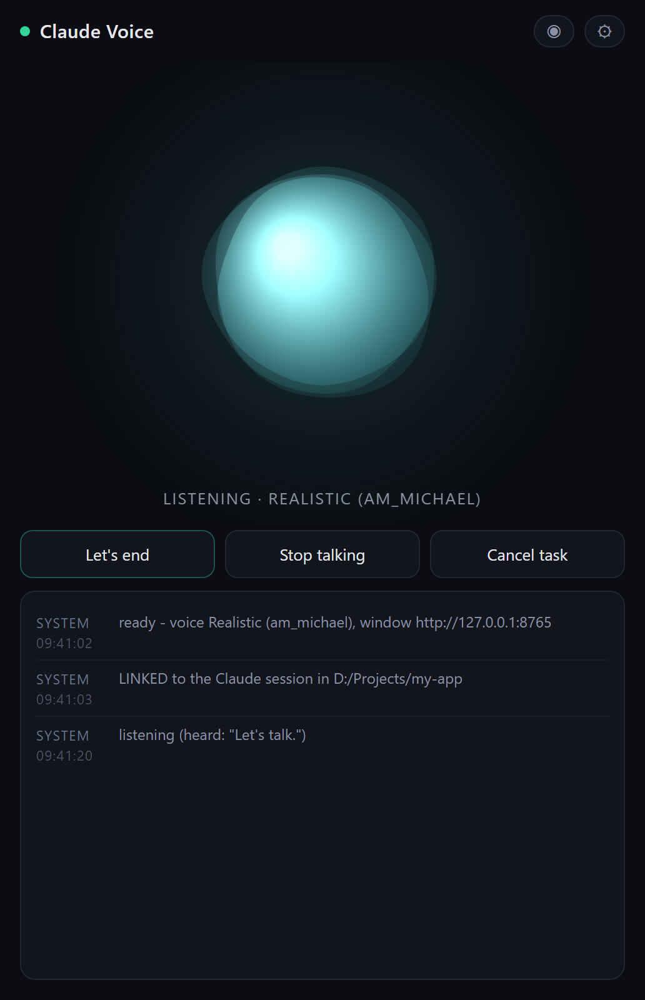
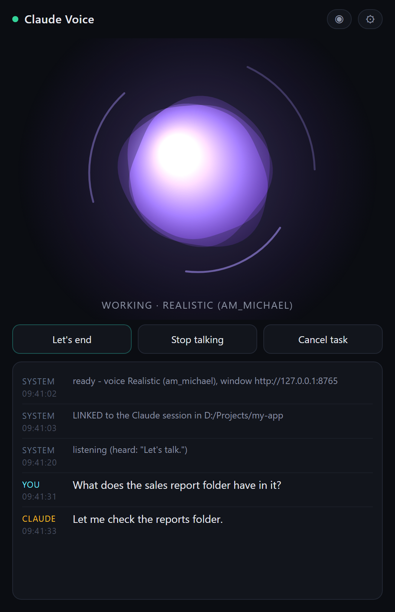
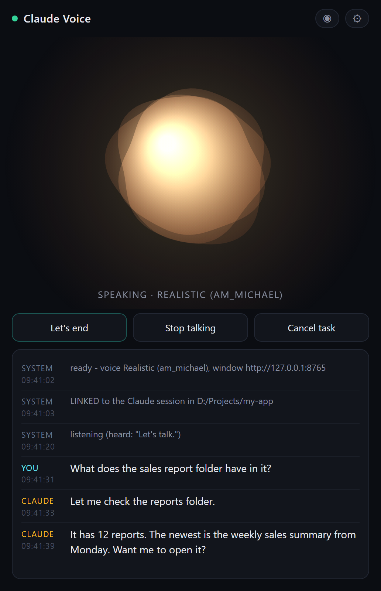
Things you can say
| Say | What happens |
|---|---|
| “let's talk” | Starts listening. You can go straight on: “let's talk, what's in my reports folder?” |
| anything else | Goes to Claude, which works on it and answers out loud. |
| “stop” / “wait” | Stops it talking straight away. |
| “cancel task” | Claude drops what it's doing. |
| “switch to the Microsoft voice” | Lighter voice that uses less memory. “switch to the realistic voice” goes back. |
| “okay, let's end” | Stops listening. Work in progress still finishes. |
To turn it off completely, type close voice in Claude Code.
Settings
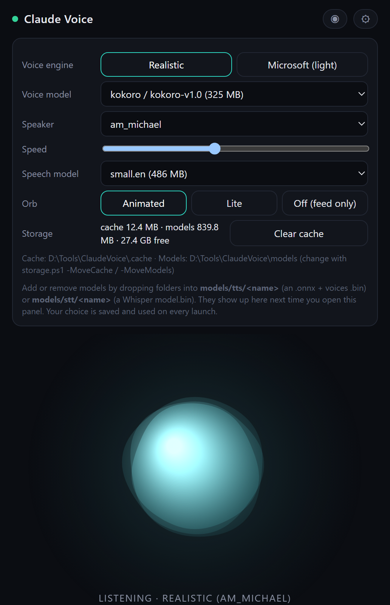
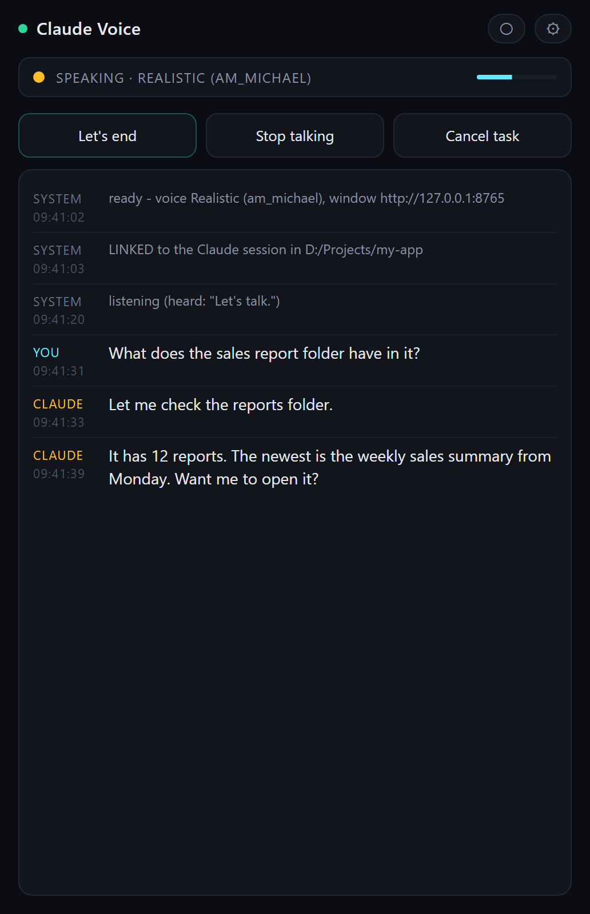
If something goes wrong
| Problem | Fix |
|---|---|
| Setup closed with an error | Check your internet, then double-click setup_voice.bat again. |
| No sound | Make your speakers or headphones the Windows default, then type close voice and open voice. |
| It doesn't hear you | Make your microphone the Windows default input. Say “let's talk” clearly. |
| No window | Type open voice again. |
| Short on space | Settings → Clear cache, or run storage.ps1 -Clean. |